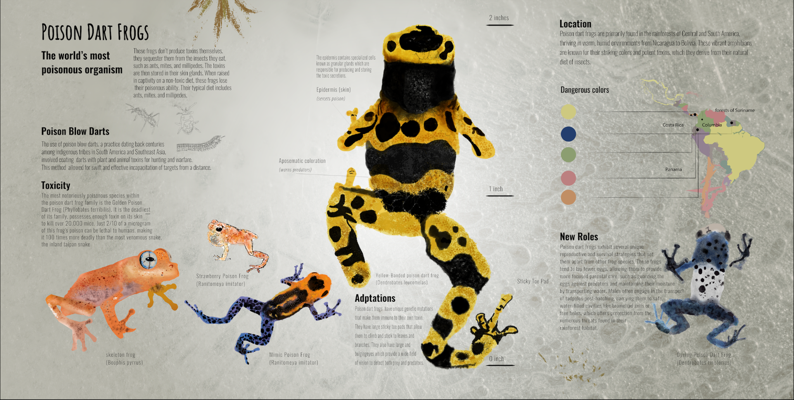
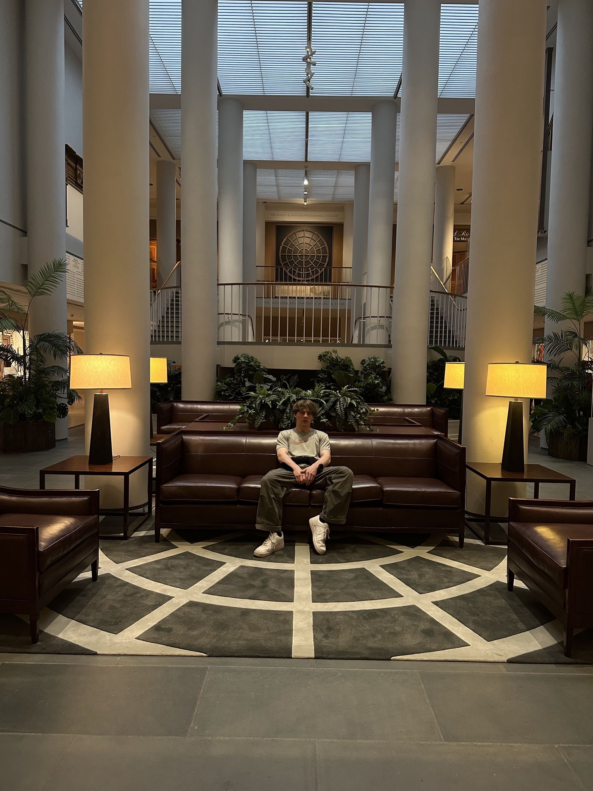

Visuals


Tyler Schrimper — producer & digital creator. 7,000 beats and counting.
Tap a cover to listen · Buy opens an email with the beat pre-filled · exclusives & stems negotiable


Producer and engineer out of Chapel Hill, NC. UNC Chapel Hill, Communication Studies ’25. Five years building @imnotbink — thousands of listeners, collabs across the internet, a catalog of 7,000+ instrumentals. Ableton, Pro Tools, the full Adobe suite.